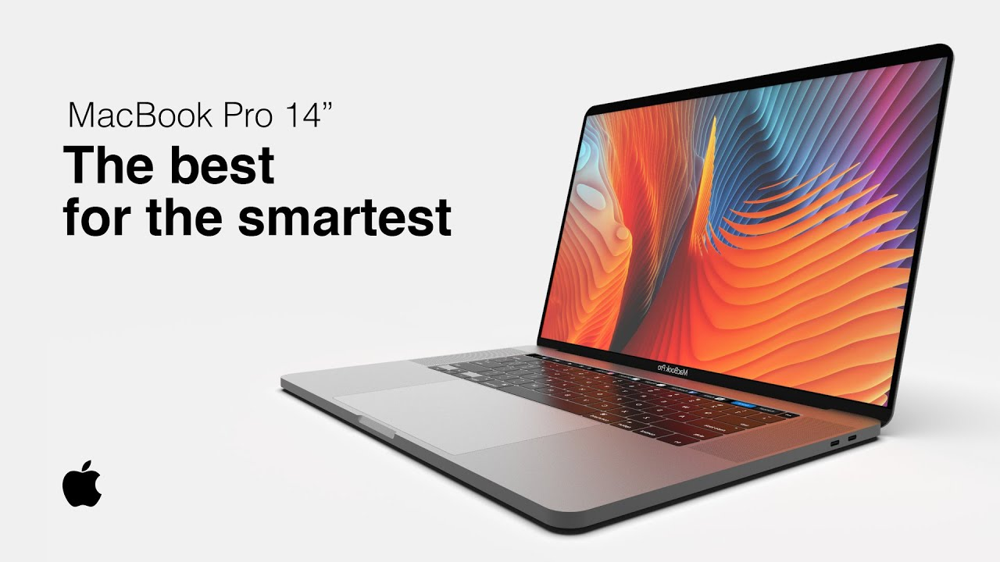
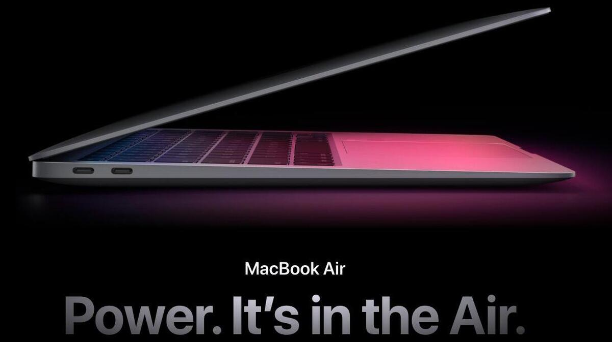

Shop now at the Apple Store online with many great ways to buy. Get free, no-contact delivery, Specialist help and more
MacBook Pro 16
40.65 cm / 16-inch (diagonal) LED-backlit display with IPS technology; 3072x1920 native resolution at 226 pixels per inch with support for millions of colours ,500 nits brightness, wide colour(P3),True Tone Technology,Refresh Rate:50.00Hz


Processor:Configurable to 2.4GHz 8-core Intel Core i9, Turbo Boost up to 5.0GHz, with 16MB shared L3 cache,Storage:1TB SSD Confgurable to 2TB, 4TB or 8TB SSD and Memory:16GB of 2666MHz DDR4 onboard memory Configurable to 32GB or 64GB of memory,Graphics:AMD Radeon Pro 5300M with 4GB of GDDR6 memory and automatic graphics switching Intel UHD Graphics 630 Configurable to AMD Radeon Pro 5500M with 4GB of GDDR6 memory, AMD Radeon Pro 5500M with 8GB of GDDR6 memory or AMD Radeon Pro 5600M with 8GB of HBM2 memory,Touchpad:Force Touch trackpad for precise cursor control and pressure-sensing capabilities; enables Force clicks, accelerators, pressure-sensitive drawing and Multi-Touch gestures
MacBook Pro-14 Inch
The "14-inch MacBook Pro" is a rumored laptop that will replace the 13-inch model with a new design and features. It may include mini LED or micro LED for the display, have slimmer bezels, and a more squared-off design. The next-generation M-series processor will make this one of the most-powerful MacBooks ever made.Announcement and release expected in 2021
,New 14.1-inch Retina Display,
Micro LED could be introduced,
Apple Silicon processor -- possible "M1X" or "M2",
Magic Keyboard,
Altered or removed Touch Bar,
Rumors about Apple's unreleased products continually churn, and while they aren't always on the mark, the consensus often provides some insight into what's next. A new and bigger display, a squared-off frame design, more Thunderbolt ports, and a new "second-tier" M-series processor are all possible with this redesign.The "14-inch MacBook Pro" is a rumored laptop that will replace the 13-inch model with a new design and features. It may include mini LED or micro LED for the display, have slimmer bezels, and a more squared-off design. The next-generation M-series processor will make this one of the most-powerful MacBooks ever made.
MacBook Air

33.78 cm / 13.3-inch (diagonal) LED-backlit display with IPS technology; 2560x1600 native resolution at 227 pixels per inch with support for millions of colours
Supported scaled resolutions:
1680x1050
1440x900
1024x640
400 nits brightness
Wide colour (P3)
True Tone technology
Apple M1 chip
8-core CPU with 4 performance cores and 4 efficiency cores,
7-core GPU,
16-core Neural Engine,Up to 15 hours wireless web,
Up to 18 hours Apple TV app movie playback,
Built-in 49.9-watt-hour lithium‑polymer battery,
30W USB-C Power Adapter,Two Thunderbolt / USB 4 ports with support for:
Charging,
DisplayPort,
Thunderbolt 3 (up to 40 Gbps),
USB 4 (up to 40Gbps),
USB 3.1 Gen 2 (up to 10 Gbps),Backlit Magic Keyboard with:
78 (US) or 79 (ISO) keys including 12 function keys and 4 arrow keys in an inverted-T arrangement,
Ambient light sensor,
Force Touch trackpad for precise cursor control and pressure-sensing capabilities; enables Force clicks, accelerators, pressure-sensitive drawing and Multi-Touch gestures,
Apple M1 chip 8-core CPU with 4 performance cores and 4 efficiency cores, 7-core GPU, 16-core Neural Engine,Up to 15 hours wireless web, Up to 18 hours Apple TV app movie playback, Built-in 49.9-watt-hour lithium‑polymer battery, 30W USB-C Power Adapter,Two Thunderbolt / USB 4 ports with support for: Charging, DisplayPort, Thunderbolt 3 (up to 40 Gbps), USB 4 (up to 40Gbps), USB 3.1 Gen 2 (up to 10 Gbps),Backlit Magic Keyboard with: 78 (US) or 79 (ISO) keys including 12 function keys and 4 arrow keys in an inverted-T arrangement, Ambient light sensor, Force Touch trackpad for precise cursor control and pressure-sensing capabilities; enables Force clicks, accelerators, pressure-sensitive drawing and Multi-Touch gestures,